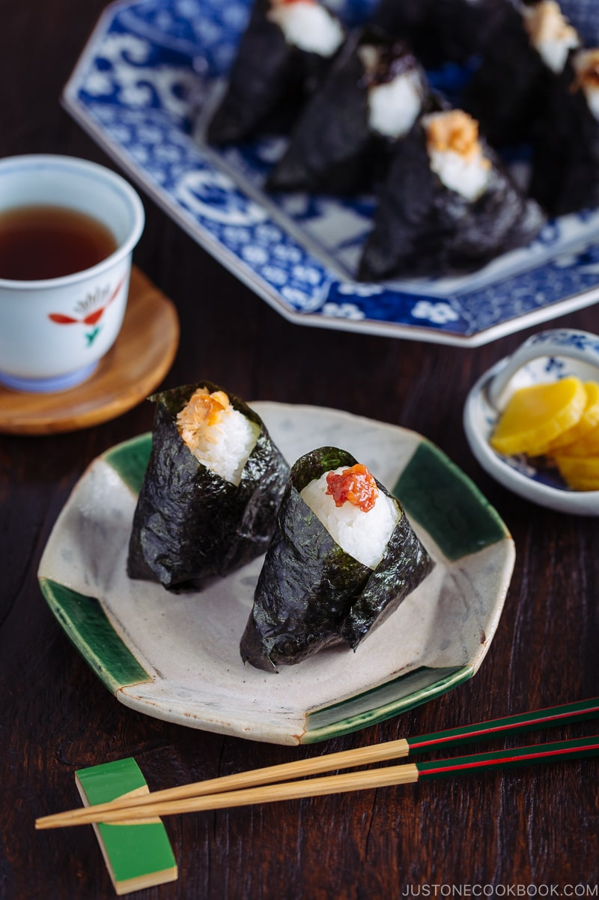

Salmon Onigiri

Japanese rice balls
They are sometimes called the magical food of the Japanese. They are the classic comfort food for picnics, bento boxes and quick grab and go snacks!
Ingredients
- Two skin-on salmon filets
- Soy sauce
- Yuzu juice (extract)
- Japanese short-grain rice
- Neutral flavored oil
- Grated ginger
- Sake
- Sugar
- Toasted white sesame seeds
- Shiso leaves